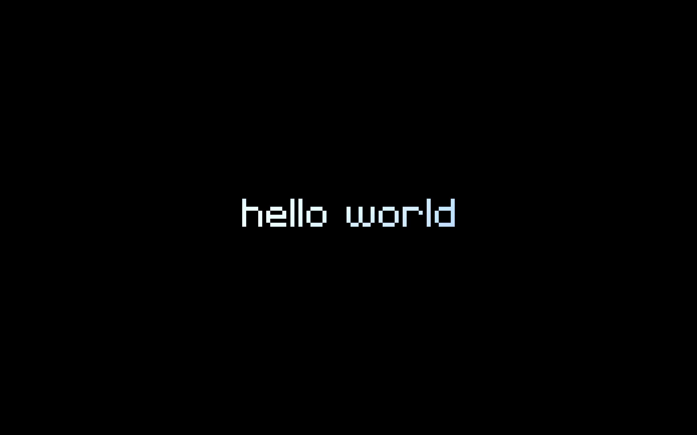

Benvenuti su CairaDev: Il mio Hello World
Ogni programmatore sa che il primo programma che si scrive è sempre lo stesso...
Leggi di più →
Ogni programmatore sa che il primo programma che si scrive è sempre lo stesso...
Leggi di più →